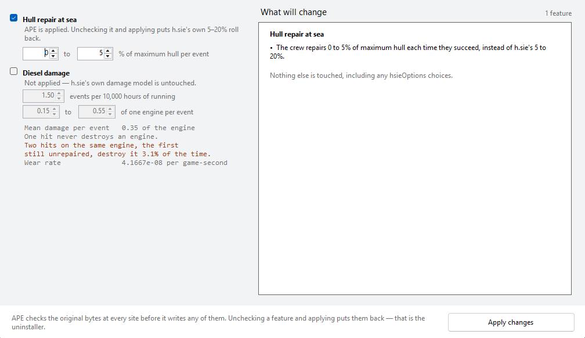

Intro
APE allows changing some of the hardcoded HSIE patches that I and others have found ahistorical (U-Tanker Mod and Diesel Damages Fix), and adds a new Depth Stress feature; more features may follow in future versions.
Compatibility
Tested in OAE and GWX-KC, should work for anything so long as hsie is installed.
If you're seeing "Install refused", you should install hsie
Install
Simply unpack the exe into your root game folder, alongside sh3.exe.
Usage
For APE to edit an hsie patch, it must first be enabled using HsieOptionsSelector.

Uninstalled patched will appear greyed out in APE
With hsie patches enabled, you can check the boxes of whichever patch you would like to change.
Set the values to your preference — the effects of your choices are explained in the field "What will change". When you are done, click "Apply changes" in the bottom-right corner.
Depth Stress
Optional. Below 100 m (tier 1) a U-boat's electric engine room takes on water and hull damage is multiplied; below the tier-2 depth (default 150 m) both get worse. The crew pumps the water out, and a fresh crew keeps up. Every depth, rate and multiplier can be set in APE. APE installs its own ape.act module for this; unchecking Depth Stress removes it.
Disable ‘Silent Running Fix’ from hsie/Stiebler Options!
Motor flooding: once the electric engine room is flooded past the threshold (default 20 %), both electric motors take damage for as long as the engine telegraph is not at stop, at any depth and whatever flooded the room. Ordering all stop, or pumping the room back below the threshold, ends it. Damage never goes past the point where the crew can still repair it. The idea is Stoss's (M. Hamacher on YouTube): water in the motor room meant the motors had to be taken out of service. Five points below the threshold (15 % by default) the chief engineer warns you once: “Water in the motor room, sir! Pump it out or stop the motors!” The warning is English only and is off when Motor damage is 0.
In silent running (pumps off) a boat sitting deep will flood and slowly sink. This is intended: Stiebler's Silent-running Fix does the same, and Depth Stress replaces its depth-gauge workaround.
Starboard motor in the bow quarters: GWX-based installs, such as OAE and GWX-KC, put the starboard electric motor in the bow quarters in their damage model. When it is damaged, the damage screen shows the bow quarters damaged instead of the electric engine room, and only a repair team sent to the bow quarters repairs it. APE's optional Starboard motor zone fix puts the motor back in the electric engine room; it takes effect the next time you start SH3. Without it, send your repair team to the bow quarters.
Crush Time
Optional, and separate from Depth Stress. It rewrites every playable U-boat's crush speed from one setting (default 5 seconds). The time is nominal: it is the rough time a full-hull boat lasts below crush depth.
Uninstall
Simply uncheck the boxes in APE — all changes will revert back to hsie defaults.
Special Thanks
Stoss (M. Hamacher on YouTube) shaped depth stress more than anyone else, generously giving his time to correcting my misconceptions. This module wouldn't have happened without his knowledge and insight, big thanks!
Contact
Feel free to DM me on Discord (BlinkingApe) with any questions, suggestions, or issues.
Changelog
- v1.11 — now only checks for hsie compatibility
- v1.12 — fixed rare bug where reversing would cause repeated damage
- v1.13 — fixed diesel damage crash on Linux (Wine/Proton); if upgrading, click "Apply changes" once
- v1.14 — new features:
- Depth Stress: below 100 m (and more below tier 2) the electric engine room takes on water and hull damage is multiplied; the crew pumps, and every depth, rate and multiplier is tunable
- Motor flooding damage: past the flooding threshold (default 20 %) the electric motors take damage until you order all stop or pump the room out, with a chief engineer warning at 15 %
- Crush Time: one crush-speed setting for every playable U-boat
- Starboard motor zone fix: optional, for GWX-based installs such as OAE and GWX-KC
- Depth Stress replaces Stiebler's Silent-running Fix depth-gauge workaround; no separate install step, APE deploys
ape.act for you